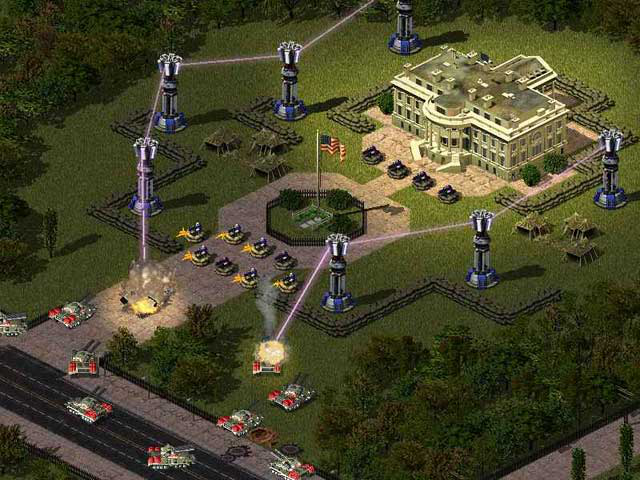

[BuildingType]>PrismForwarding=
(enumeration - yes|no|forward|attack)
决定此建筑是否可以递光。
PrismForwarding=forward 代表此建筑可以为其他建筑递光，但自身不能接受递光。
PrismForwarding=attack
代表此建筑可以接受递光，但自身不能为其他建筑递光。
PrismForwarding=yes
代表此建筑具备完整的递光功能 - 既可以递光也可以接受递光。
PrismForwarding=no
代表此建筑不启动递光逻辑。
[General]>PrismType中的建筑默认yes，其他建筑默认no。
[BuildingType]>PrismForwarding.Targets= (list of BuildingTypes)
这个建筑能够递光支援的建筑
[BuildingType]>PrismForwarding.MaxFeeds= (integer)
最大支援数量，-1表示无限制，默认[General]>PrismSupportMax覆盖
[BuildingType]>PrismForwarding.MaxChainLength= (integer)
反向连接数量，-1表示无限制，默认1，如果要达到上图效果就要设置3
[BuildingType]>PrismForwarding.MaxNetworkSize= (integer)
如果开火中的塔超过支援的塔，这个标签表示在递光网络的总数，不包括开火中的塔，默认[General]>PrismSupportMax覆盖
[BuildingType]>PrismForwarding.SupportModifier= (float - multiplier)
递光杀伤倍数，默认[General]>PrismSupportModifier覆盖
[BuildingType]>PrismForwarding.DamageAdd= (integer - damage bonus)
增加固定的伤害而不是倍数，默认0
[BuildingType]>PrismForwarding.MyHeight= (integer - leptons)
递光高度，默认[General]>PrismSupportHeight覆盖 （3.0已废除此标签）
[BuildingType]>PrismForwarding.ToAllies= (boolean)
是否能支援友军的塔，默认否
[BuildingType]>PrismForwarding.BreakSupport= (boolean)
可以在终止的最后一刻进行支援，而不需要重新充能，默认否
[BuildingType]>PrismForwarding.ChargeDelay= (integer - frames)
递光时充能的延迟，默认1，最好别动（作者如是说，这玩意儿是用来测试玩的）
[BuildingType]>PrismForwarding.Intensity= (integer - laser thickness)
随着递光增加激光的宽度
[BuildingType]>Overpowerable= (boolean)
是否能攻击递光同时进行
[BuildingType]>PrismForwarding.SupportWeapon= (weapon)
[BuildingType]>PrismForwarding.EliteSupportWeapon= (weapon)
副武器的递光不再使用而是用这个标签的武器递光
以下标签可以被用来定义支援时的光束武器，都是原版标签。
[PrismForwarding.SupportWeapon]>Range= (integer - cells)
支援半径，默认主武器射程+1
[PrismForwarding.SupportWeapon]>MinimumRange= (integer - cells)
最小半径
[PrismForwarding.SupportWeapon]>ROF= (integer - frames)
支援速率，默认[General]>PrismSupportDelay覆盖
[PrismForwarding.SupportWeapon]>Report= (sound)
支援声音
[PrismForwarding.SupportWeapon]>IsLaser= (boolean)
是否是激光
[PrismForwarding.SupportWeapon]>IsElectricBolt= (boolean)
是否是特斯拉
[PrismForwarding.SupportWeapon]>IsRadBeam= (boolean)
是否是辐射波
为了方便计算，压缩包里有个工具可以用来弄这玩意儿
文件地址为Documentation/_downloads/PrismForwarding.xls